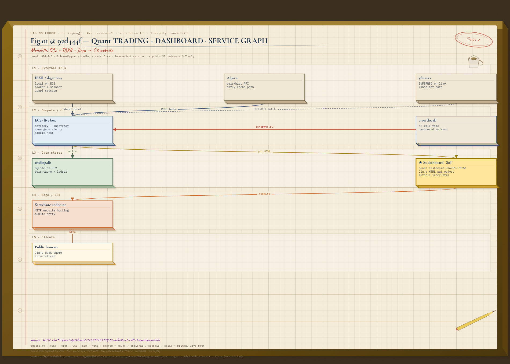
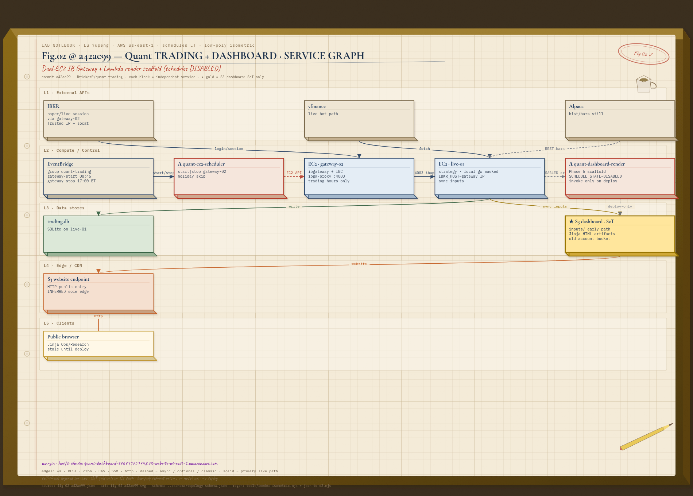
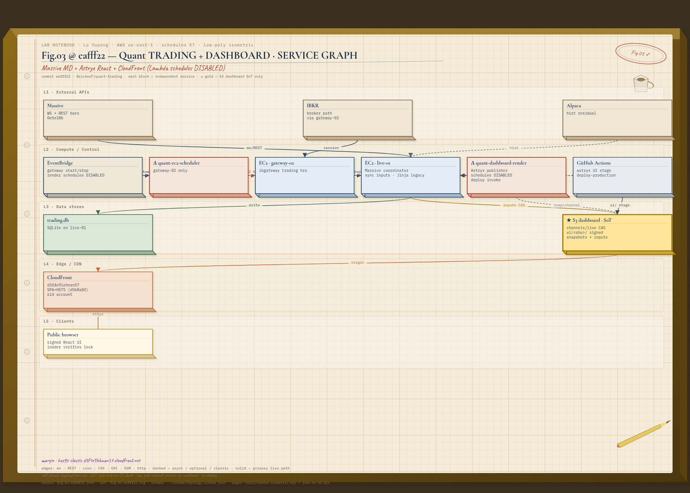
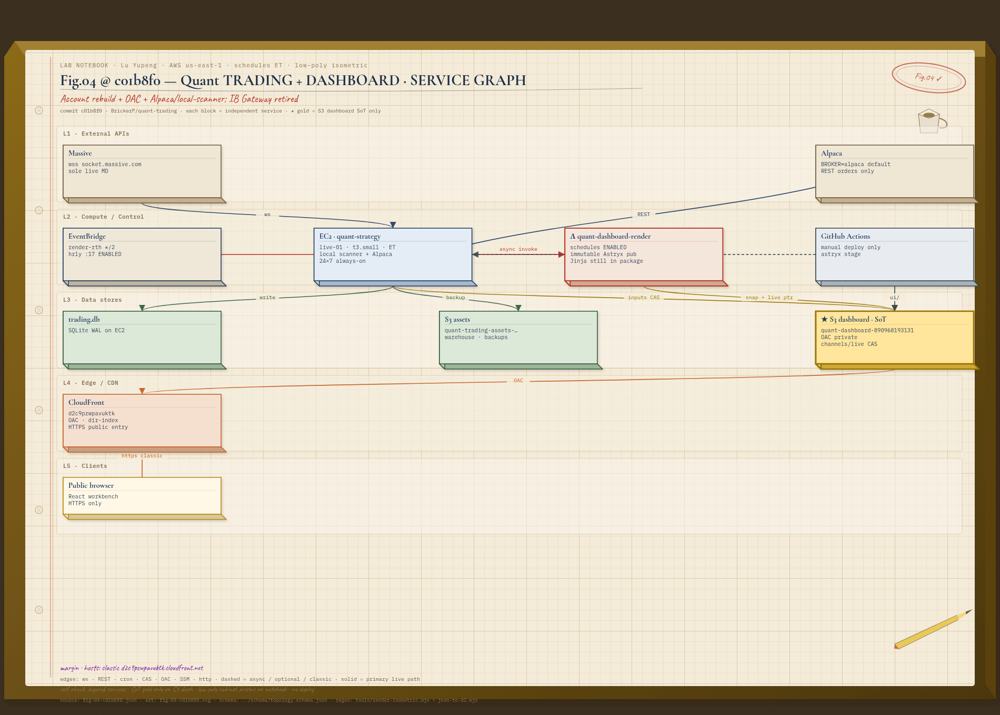
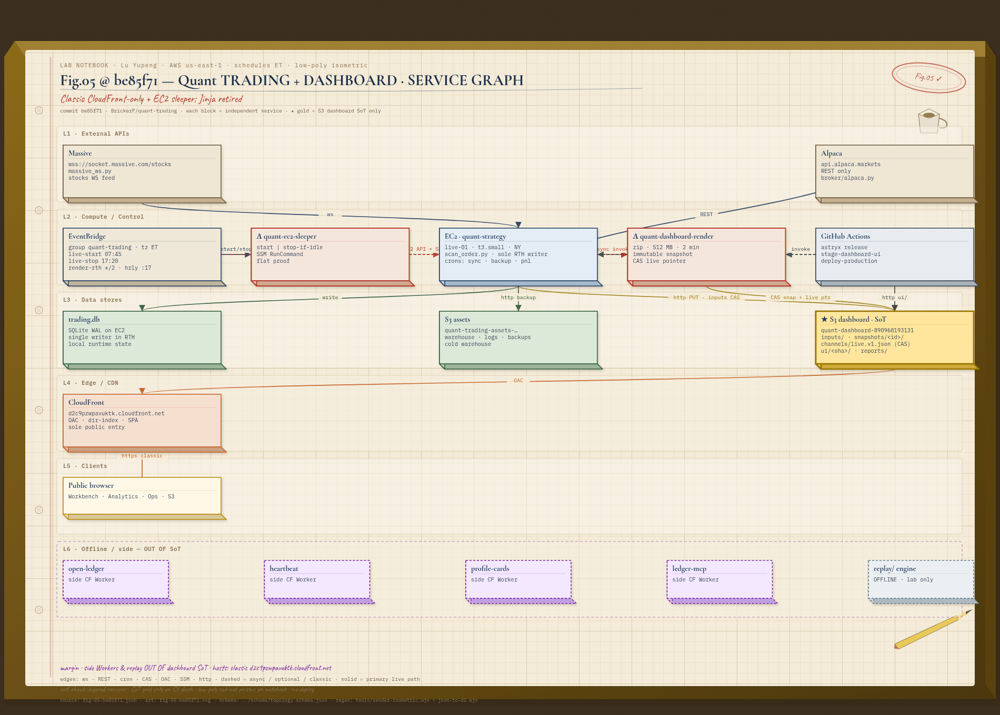
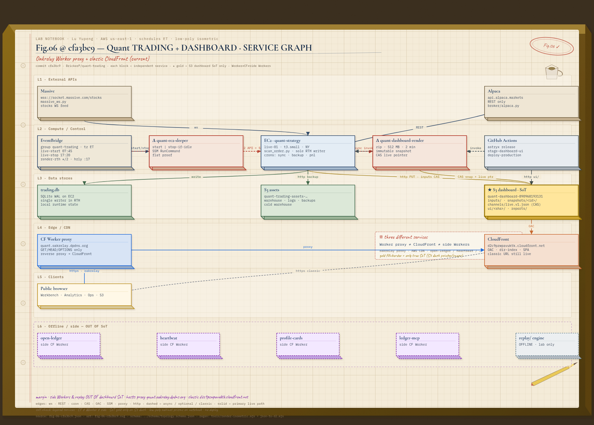

Architecture hub · Programme insert
Fig.01–06
Printed 2026-10-11
Quant architecture
架构
Eras
Architecture hub · Programme insert
Quant architecture
Private system · Fig.01 oldest · Fig.06 current
Six commits, six diagrams. Each figure draws the services and the edges present at that commit, from the April 2026 S3 website through the October 2026 Oakrelay Worker proxy.
- Span
- 2026-04-17 – 2026-10-11
- Eras
- Fig.01 – Fig.06
- Current
- Oakrelay proxy · Fig.06
- Proxy
- quant.oakrelay.dpdns.org
- Classic
- d2c9pzwpavuktk.cloudfront.net
- Source
- README
Featuring layered services · directed protocol edges · S3 dashboard as the gold source of truth · Worker proxy, classic CloudFront, and side Workers as separate services on Fig.06
01Eras
Versioning is Fig.NN @ shortsha. NN counts forward from the oldest era. The source of this table is docs/architecture/README.md on develop. The order path measured on technical sheet № 01 is the execution sheet; these figures are the topology at each commit.
| Fig | shortsha | Date (UTC+8) | One-line delta | Confidence | Present at commit |
|---|---|---|---|---|---|
| Fig.01 | 92d444f | 2026-04-17 | SQLite + Jinja → S3 website monolith (IBKR local + Alpaca bars) | documented (92d444f generate.py website URL); yfinance edge inferred | EC2, IBKR/ibgateway local, Alpaca hist, trading.db, S3 website, cron generate |
| Fig.02 | a42ae99 | 2026-05-13 | Dual-EC2 gateway-02 + quant-ec2-scheduler + Phase 6 Lambda (schedules disabled) | documented (PHASES.md, ARCHITECTURE_REVIEW #2–3, f9347a6/a42ae99); public edge is the S3 website (inferred) | EventBridge→scheduler, gateway-02, live-01, Lambda render (schedules disabled), sync inputs, Jinja, S3 website |
| Fig.03 | eafff22 | 2026-07-24 | Massive market data + Astryx signed React/channels/live + CloudFront | documented cluster 0e5e18b/eafff22/6705c1f/d5b8a8f; Lambda render schedules disabled | Massive, Astryx UI, CF d3f4e9lehnan57, gateway-02, GHA stage, IBKR path |
| Fig.04 | c01b8f0 | 2026-09-23 | Account 890968193131 rebuild + OAC + Alpaca/local-scanner | documented 239e7d3/c01b8f0/ba1fd05/f36c5c6/b6210aa/d47f1a0 | Massive, Alpaca REST, EventBridge→render enabled, live-01 24×7, OAC CF d2c9pzwpavuktk, assets bucket |
| Fig.05 | be85f71 | 2026-10-10 | EC2 sleeper + React-only publisher; classic CloudFront public path | documented e8d6f2f/9b20c37/b0d5ccf/eb11bd1 + agent-memory live URL | sleeper, React-only pub, CloudFront public entry, side Workers, replay |
| Fig.06 | cfa3bc9 | 2026-10-11 | Oakrelay Worker proxy + classic CloudFront (current) | core stack documented; proxy host ops-captured / not in git | sleeper, React publisher, CloudFront, side Workers, replay, Worker quant.oakrelay.dpdns.org |
02Figures
Fig.01 @ 92d444f — Monolith / S3 website


2026-04-17 14:08 +0800 · Add SQLite persistence + S3 static dashboard
Public host: S3 website, account 376791751748. EC2 runs a local IB Gateway, Alpaca historical bars, and trading.db. Cron runs generate.py and publishes the Jinja dashboard to the S3 website.
Fig.02 @ a42ae99 — Dual-EC2 + Lambda render


2026-05-13 19:18 +0800 · feat(dashboard): Phase 6 - Lambda render with S3 inputs (#280)
Public host: S3 website. EventBridge drives quant-ec2-scheduler, which starts and stops gateway-02. The live engine runs on quant-ec2-live-01. Phase 6 Lambda render, schedules disabled, reads sync inputs; a Jinja publisher writes the S3 website.
Fig.03 @ eafff22 — Massive + Astryx + CloudFront


2026-07-24 07:06 +0800 · feat(dashboard): ship immutable Astryx dashboard pipeline (#342)
Public host: CloudFront d3f4e9lehnan57.cloudfront.net. Massive market data and a signed Astryx React build on channels/live sit behind that distribution. GitHub Actions stages the dashboard. Gateway-02 carries the IBKR path into trading.db. Lambda render schedules are disabled.
Fig.04 @ c01b8f0 — Rebuild / OAC


2026-09-23 23:44 +0800 · chore: remove the dead IB Gateway path end to end (#387)
Public host: CloudFront d2c9pzwpavuktk.cloudfront.net, account 890968193131. Alpaca REST and a local scanner run on live-01, 24×7. EventBridge render schedules are enabled. Origin access control fronts separate dashboard and assets buckets. The S3 dashboard is the gold source of truth.
Fig.05 @ be85f71 — Classic CloudFront + EC2 sleeper


2026-10-10 20:16 +0800 · Dashboard summary: additive replay_attribution block (#478)
Public host: CloudFront d2c9pzwpavuktk.cloudfront.net. An EC2 sleeper runs between sessions. The publisher is React. Side Workers — open-ledger, ledger-mcp, and metrics — and the replay CLI sit beside the stack.
Fig.06 @ cfa3bc9 — Oakrelay Worker proxy


2026-10-11 17:00 +0800 · ops: publish warehouse fills to open-ledger via GitHub Actions · current
Public hosts: Worker proxy quant.oakrelay.dpdns.org and classic CloudFront d2c9pzwpavuktk.cloudfront.net. The sleeper, React publisher, side Workers, and replay CLI are in the stack with them. The S3 dashboard is the gold source of truth. The proxy host is ops-captured.
Ink · oxblood · one vermilion spot on warm stockPrinted 2026-10-11 · Fig.01–Fig.06Source README